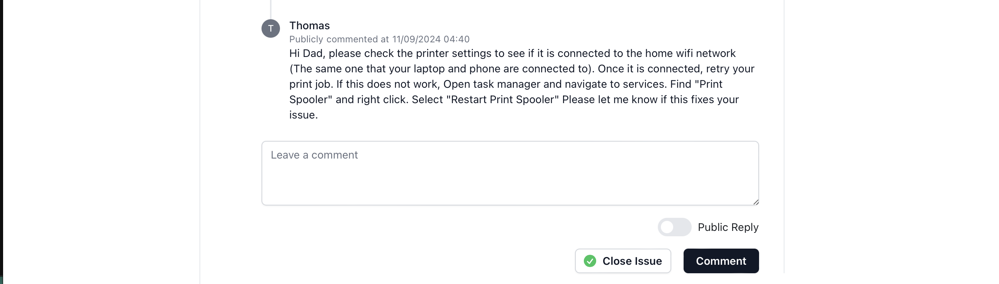

After receiving countless texts and calls from my parents asking for help fixing tech issues around their home, I decided that I needed a simple way to track all of their complaints. I also wanted a way to document the steps I took to fix these issues for them so that they could refer back to my notes for any reoccuring issue.
After assessing the needs of my parents and the small scale of the project, I was clearly after a lightweight ticket management software that would be simple enough for my parents to use, but also boast the main features that one would expect from an enterprise level ticket management software. Enter Peppermint.
Peppermint was created by Jack Andrews and describes itself as a self-hosted alternative to popular services such as Zendesk. Its main features include ticket creation, a log of client history, and a notetaking tool. After touring the Peppermint website, I decided that this is the software I would use to assist me as my parents' personal helpdesk.
The first decision I needed to make was how I would host Peppermint so that it would be easily accessible to both my parents and I. I thought about hosting it on a spare laptop running Virtualbox, but then it would be susceptible to power outages and hardware failures. The official Peppermint Docs recommend using Linode, a cloud service provider powered by parent company, Akamai. However, the main problem with Linode is that after the free credit promotion for new users, they would charge me $5 per month to host Peppermint. I compared this to Amazon Web Services free tier for hosting PaaS which offers 75 hours of usage before reaching the paid threshold. This seemed much more appropriate for my situation, so it was time to jump into the cloud.
I configured an EC2 instance running the Amazon distribution of Linux and enabled a key pair privacy key for security purposes. I also set outbound rules in a security group for HTTP and HTTPS on port 80 and 443 respectively.
Next, I needed to deploy Peppermint within my EC2 instance. To do that though, I had to SSH into my instance from my laptop's terminal. I connected to my instance's public IP and used my key pair certificate to authorize my connection. Now that my connection was established, I had full control of the Linux OS running on my instance. The first thing I did from that point was install Docker along with Docker Compose. Once all the necessary tools were installed, I created a yml file and pasted the instructions from the Peppermint documentation for Docker to create the container and pull the image of Peppermint v3.11.
Success! Everything in the command line was working as expected. Peppermint should be accessible from the public IP of my EC2 instance. However, when I navigated to the public IP, I wasn't seeing Peppermint. To troubleshoot this issue, I went back to the yml file to read through the configuration of the Docker container. I realized that I didn't create an inbound rule for the port assigned to peppermint, which was port 3000.
After accessing the security group for my instance and creating this rule, I made sure I was navigating to the public IP on port 3000 and held my breath...
I was finally running the Peppermint software on my own EC2 instance. It wasn't time to relax though. I logged into Peppermint using the default administrator credentials and created client accounts for both of my parents. Once they were created, I texted our family groupchat a link to the instance and told them to create a ticket whenever they had a tech issue. It wasn't long before I received my first ticket on the "Mom and Dad" Helpdesk.
The very first ticket that came through was labelled "Printer not working" and it was sent in by my Dad. I opened the ticket and got to work with assessing his issue.
Ok, my dad did a bit of the legwork himself which I was very thankful for. He already checked that the printer is powered on and that it has ink and paper ready to go. Unfortunately, the printer still won't complete a print job for him. My first thought was to make sure that the printer is connected to the home wifi. If this was not the issue, I also gave him a follow up task to reset the print spooler.

After this, my dad called me and told me that he enjoyed using Peppermint and that my advice solved his problem (The printer wasn't connected to the wifi)! I'm so happy that this turned out to be a positive experience. I was able to learn a lot about technologies like Docker as well as reinforce my understanding of AWS. I'm also glad I got to practice my documentation skills in regards to ticket management. Oh wait.. I'd love to stick around, but another ticket just came in!